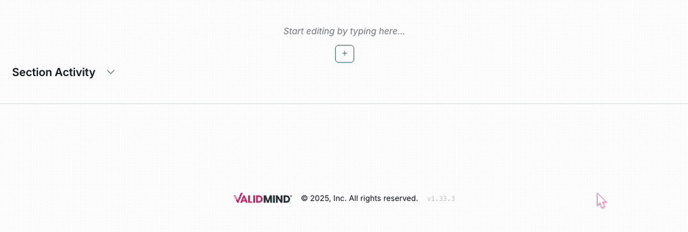
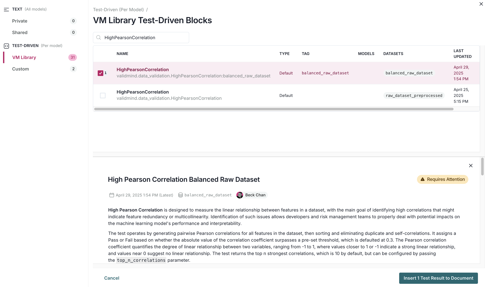
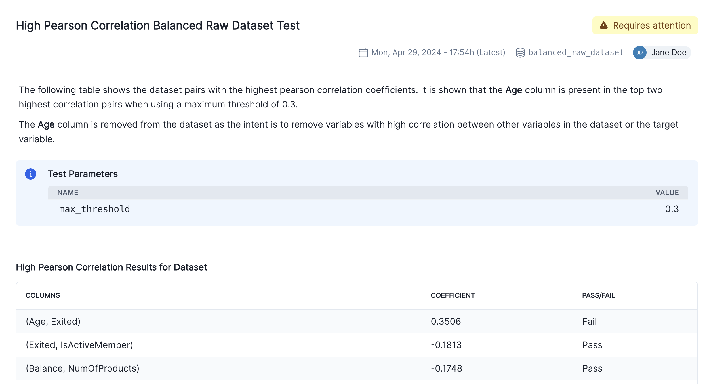

# Make sure the ValidMind Library is installed
%pip install -q validmind
# Load your model identifier credentials from an `.env` file
%load_ext dotenv
%dotenv .env
# Or replace with your code snippet
import validmind as vm
vm.init(
# api_host="...",
# api_key="...",
# api_secret="...",
# model="...",
document="documentation",
)ValidMind for development 2 — Start the development process
Learn how to use ValidMind for your end-to-end documentation process with our series of four introductory notebooks. In this second notebook, you'll run tests and investigate results, then add the results or evidence to your documentation.
You'll become familiar with the individual tests available in ValidMind, as well as how to run them and change parameters as necessary. Using ValidMind's repository of individual tests as building blocks helps you ensure that a record (model) is being built appropriately.
For a full list of out-of-the-box tests and descriptions, use the interactive ValidMind test sandbox.
Learn by doing
Our course tailor-made for developers new to ValidMind combines this series of notebooks with more a more in-depth introduction to the ValidMind Platform — Developer Fundamentals
Our course tailor-made for developers new to ValidMind combines this series of notebooks with more a more in-depth introduction to the ValidMind Platform — Developer Fundamentals
Prerequisites
In order to log test results or evidence to your documentation with this notebook, you'll need to first have:
Need help with the above steps?
Refer to the first notebook in this series: 1 — Set up the ValidMind Library
Refer to the first notebook in this series: 1 — Set up the ValidMind Library
Setting up
Initialize the ValidMind Library
First, let's connect up the ValidMind Library to our model we previously registered in the ValidMind Platform:
On the left sidebar that appears for your model, select Getting Started and select
Developmentfrom the DOCUMENT drop-down menu.Click Copy snippet to clipboard.
Next, load your model identifier credentials from an
.envfile or replace the placeholder with your own code snippet:
Import sample dataset
Then, let's import the public Bank Customer Churn Prediction dataset from Kaggle.
In our below example, note that:
- The target column,
Exitedhas a value of1when a customer has churned and0otherwise. - The ValidMind Library provides a wrapper to automatically load the dataset as a Pandas DataFrame object. A Pandas Dataframe is a two-dimensional tabular data structure that makes use of rows and columns.
from validmind.datasets.classification import customer_churn as demo_dataset
print(
f"Loaded demo dataset with: \n\n\t• Target column: '{demo_dataset.target_column}' \n\t• Class labels: {demo_dataset.class_labels}"
)
raw_df = demo_dataset.load_data()
raw_df.head()Identify qualitative tests
Next, let's say we want to do some data quality assessments by running a few individual tests.
Use the vm.tests.list_tests() function introduced by the first notebook in this series in combination with vm.tests.list_tags() and vm.tests.list_tasks() to find which prebuilt tests are relevant for data quality assessment:
tasksrepresent the kind of modeling task associated with a test. Here we'll focus onclassificationtasks.tagsare free-form descriptions providing more details about the test, for example, what category the test falls into. Here we'll focus on thedata_qualitytag.
# Get the list of available task types
sorted(vm.tests.list_tasks())# Get the list of available tags
sorted(vm.tests.list_tags())You can pass tags and tasks as parameters to the vm.tests.list_tests() function to filter the tests based on the tags and task types.
For example, to find tests related to tabular data quality for classification models, you can call list_tests() like this:
vm.tests.list_tests(task="classification", tags=["tabular_data", "data_quality"])
Want to learn more about navigating ValidMind tests?
Refer to our notebook outlining the utilities available for viewing and understanding available ValidMind tests: Explore tests
Refer to our notebook outlining the utilities available for viewing and understanding available ValidMind tests: Explore tests
Initialize the ValidMind dataset
With the individual tests we want to run identified, the next step is to connect your data with a ValidMind Dataset object. This step is always necessary every time you want to connect a dataset to documentation and produce test results through ValidMind, but you only need to do it once per dataset.
Initialize a ValidMind dataset object using the init_dataset function from the ValidMind (vm) module. For this example, we'll pass in the following arguments:
dataset— The raw dataset that you want to provide as input to tests.input_id— A unique identifier that allows tracking what inputs are used when running each individual test.target_column— A required argument if tests require access to true values. This is the name of the target column in the dataset.
# vm_raw_dataset is now a VMDataset object that you can pass to any ValidMind test
vm_raw_dataset = vm.init_dataset(
dataset=raw_df,
input_id="raw_dataset",
target_column="Exited",
)Running tests on datasets
Now that we know how to initialize a ValidMind dataset object, we're ready to run some tests!
You run individual tests by calling the run_test function provided by the validmind.tests module. For the examples below, we'll pass in the following arguments:
test_id— The ID of the test to run, as seen in theIDcolumn when you runlist_tests.params— A dictionary of parameters for the test. These will override anydefault_paramsset in the test definition.
Run tabular data tests
The inputs expected by a test can also be found in the test definition — let's take validmind.data_validation.DescriptiveStatistics as an example.
Note that the output of the describe_test() function below shows that this test expects a dataset as input:
vm.tests.describe_test("validmind.data_validation.DescriptiveStatistics")Now, let's run a few tests to assess the quality of the dataset:
result = vm.tests.run_test(
test_id="validmind.data_validation.DescriptiveStatistics",
inputs={"dataset": vm_raw_dataset},
)result2 = vm.tests.run_test(
test_id="validmind.data_validation.ClassImbalance",
inputs={"dataset": vm_raw_dataset},
params={"min_percent_threshold": 30},
)The output above shows that the validmind.data_validation.ClassImbalance test did not pass according to the value we set for min_percent_threshold.
To address this issue, we'll re-run the test on some processed data. In this case let's apply a very simple rebalancing technique to the dataset:
import pandas as pd
raw_copy_df = raw_df.sample(frac=1) # Create a copy of the raw dataset
# Create a balanced dataset with the same number of exited and not exited customers
exited_df = raw_copy_df.loc[raw_copy_df["Exited"] == 1]
not_exited_df = raw_copy_df.loc[raw_copy_df["Exited"] == 0].sample(n=exited_df.shape[0])
balanced_raw_df = pd.concat([exited_df, not_exited_df])
balanced_raw_df = balanced_raw_df.sample(frac=1, random_state=42)With this new balanced dataset, you can re-run the individual test to see if it now passes the class imbalance test requirement.
As this is technically a different dataset, remember to first initialize a new ValidMind Dataset object to pass in as input as required by run_test():
# Register new data and now 'balanced_raw_dataset' is the new dataset object of interest
vm_balanced_raw_dataset = vm.init_dataset(
dataset=balanced_raw_df,
input_id="balanced_raw_dataset",
target_column="Exited",
)# Pass the initialized `balanced_raw_dataset` as input into the test run
result = vm.tests.run_test(
test_id="validmind.data_validation.ClassImbalance",
inputs={"dataset": vm_balanced_raw_dataset},
params={"min_percent_threshold": 30},
)Utilize test output
You can utilize the output from a ValidMind test for further use, for example, if you want to remove highly correlated features. Removing highly correlated features helps make the model simpler, more stable, and easier to understand.
Below we demonstrate how to retrieve the list of features with the highest correlation coefficients and use them to reduce the final list of features for modeling.
First, we'll run validmind.data_validation.HighPearsonCorrelation with the balanced_raw_dataset we initialized previously as input as is for comparison with later runs:
corr_result = vm.tests.run_test(
test_id="validmind.data_validation.HighPearsonCorrelation",
params={"max_threshold": 0.3},
inputs={"dataset": vm_balanced_raw_dataset},
)The output above shows that the test did not pass according to the value we set for max_threshold.
corr_result is an object of type TestResult. We can inspect the result object to see what the test has produced:
print(type(corr_result))
print("Result ID: ", corr_result.result_id)
print("Params: ", corr_result.params)
print("Passed: ", corr_result.passed)
print("Tables: ", corr_result.tables)Let's remove the highly correlated features and create a new VM dataset object.
We'll begin by checking out the table in the result and extracting a list of features that failed the test:
# Extract table from `corr_result.tables`
features_df = corr_result.tables[0].data
features_df# Extract list of features that failed the test
high_correlation_features = features_df[features_df["Pass/Fail"] == "Fail"]["Columns"].tolist()
high_correlation_featuresNext, extract the feature names from the list of strings (example: (Age, Exited) > Age):
high_correlation_features = [feature.split(",")[0].strip("()") for feature in high_correlation_features]
high_correlation_featuresNow, it's time to re-initialize the dataset with the highly correlated features removed.
Note the use of a different input_id. This allows tracking the inputs used when running each individual test.
# Remove the highly correlated features from the dataset
balanced_raw_no_age_df = balanced_raw_df.drop(columns=high_correlation_features)
# Re-initialize the dataset object
vm_raw_dataset_preprocessed = vm.init_dataset(
dataset=balanced_raw_no_age_df,
input_id="raw_dataset_preprocessed",
target_column="Exited",
)Re-running the test with the reduced feature set should pass the test:
corr_result = vm.tests.run_test(
test_id="validmind.data_validation.HighPearsonCorrelation",
params={"max_threshold": 0.3},
inputs={"dataset": vm_raw_dataset_preprocessed},
)You can also plot the correlation matrix to visualize the new correlation between features:
corr_result = vm.tests.run_test(
test_id="validmind.data_validation.PearsonCorrelationMatrix",
inputs={"dataset": vm_raw_dataset_preprocessed},
)Documenting test results
Now that we've done some analysis on two different datasets, we can use ValidMind to easily document why certain things were done to our raw data with testing to support it.
Every test result returned by the run_test() function has a .log() method that can be used to send the test results to the ValidMind Platform:
- When using
run_documentation_tests(), documentation sections will be automatically populated with the results of all tests registered in the documentation template. - When logging individual test results to the platform, you'll need to manually add those results to the desired section of the documentation.
To demonstrate how to add test results to your documentation, we'll populate the entire Data Preparation section of the documentation using the clean vm_raw_dataset_preprocessed dataset as input, and then document an additional individual result for the highly correlated dataset vm_balanced_raw_dataset.
Run and log multiple tests
run_documentation_tests() allows you to run multiple tests at once and automatically log the results to your documentation. Below, we'll run the tests using the previously initialized vm_raw_dataset_preprocessed as input — this will populate the entire Data Preparation section for every test that is part of the documentation template.
For this example, we'll pass in the following arguments:
inputs: Any inputs to be passed to the tests.config: A dictionary<test_id>:<test_config>that allows configuring each test individually. Each test config requires the following:params: Individual test parameters.inputs: Individual test inputs. This overrides any inputs passed from therun_documentation_tests()function.
When including explicit configuration for individual tests, you'll need to specify the inputs even if they mirror what is included in your global configuration.
# Individual test config with inputs specified
test_config = {
"validmind.data_validation.ClassImbalance": {
"params": {"min_percent_threshold": 30},
"inputs": {"dataset": vm_raw_dataset_preprocessed},
},
"validmind.data_validation.HighPearsonCorrelation": {
"params": {"max_threshold": 0.3},
"inputs": {"dataset": vm_raw_dataset_preprocessed},
},
}
# Global test config
tests_suite = vm.run_documentation_tests(
inputs={
"dataset": vm_raw_dataset_preprocessed,
},
config=test_config,
section=["data_preparation"],
)Run and log an individual test
Next, we'll use the previously initialized vm_balanced_raw_dataset (that still has a highly correlated Age column) as input to run an individual test, then log the result to the ValidMind Platform.
When running individual tests, you can use a custom result_id to tag the individual result with a unique identifier:
- This
result_idcan be appended totest_idwith a:separator. - The
balanced_raw_datasetresult identifier will correspond to thebalanced_raw_datasetinput, the dataset that still has theAgecolumn.
result = vm.tests.run_test(
test_id="validmind.data_validation.HighPearsonCorrelation:balanced_raw_dataset",
params={"max_threshold": 0.3},
inputs={"dataset": vm_balanced_raw_dataset},
)
result.log()
Note the output returned indicating that a test-driven block doesn't currently exist in your documentation for this particular test ID.
That's expected, as when we run individual tests the results logged need to be manually added to your documentation within the ValidMind Platform.
That's expected, as when we run individual tests the results logged need to be manually added to your documentation within the ValidMind Platform.
Add individual test results to documentation
With the test results logged, let's head to the model we connected to at the beginning of this notebook and insert our test results into the documentation (Learn more: Work with test results):
From the Inventory in the ValidMind Platform, go to the model you connected to earlier.
In the left sidebar that appears for your model, click Development under Documents.
Locate the Data Preparation section and click on 2.3. Correlations and Interactions to expand that section.
Hover under the Pearson Correlation Matrix content block until a horizontal dashed line with a + button appears, indicating that you can insert a new block.

Click + and then select Test-Driven Block under FROM LIBRARY:
- Click on VM Library under TEST-DRIVEN in the left sidebar.
- In the search bar, type in
HighPearsonCorrelation. - Select
HighPearsonCorrelation:balanced_raw_datasetas the test.
A preview of the test gets shown:

Finally, click Insert 1 Test Result to Document to add the test result to the documentation.
Confirm that the individual results for the high correlation test has been correctly inserted into section 2.3. Correlations and Interactions of the documentation.
Finalize the documentation by editing the test result's description block to explain the changes you made to the raw data and the reasons behind them as shown in the screenshot below:

Running model evaluation tests
So far, we've focused on the data assessment and pre-processing that usually occurs prior to any models being built. Now, let's instead assume we have already built a model and we want to incorporate some model results into our documentation.
Train simple logistic regression model
Using ValidMind tests, we'll train a simple logistic regression model on our dataset and evaluate its performance by using the LogisticRegression class from the sklearn.linear_model.
To start, let's grab the first few rows from the balanced_raw_no_age_df dataset with the highly correlated features removed we initialized earlier:
balanced_raw_no_age_df.head()Before training the model, we need to encode the categorical features in the dataset:
- Use the
OneHotEncoderclass from thesklearn.preprocessingmodule to encode the categorical features. - The categorical features in the dataset are
GeographyandGender.
balanced_raw_no_age_df = pd.get_dummies(
balanced_raw_no_age_df, columns=["Geography", "Gender"], drop_first=True
)
balanced_raw_no_age_df.head()We'll split our preprocessed dataset into training and testing, to help assess how well the model generalizes to unseen data:
- We start by dividing our
balanced_raw_no_age_dfdataset into training and test subsets usingtrain_test_split, with 80% of the data allocated to training (train_df) and 20% to testing (test_df). - From each subset, we separate the features (all columns except "Exited") into
X_trainandX_test, and the target column ("Exited") intoy_trainandy_test.
from sklearn.model_selection import train_test_split
train_df, test_df = train_test_split(balanced_raw_no_age_df, test_size=0.20)
X_train = train_df.drop("Exited", axis=1)
y_train = train_df["Exited"]
X_test = test_df.drop("Exited", axis=1)
y_test = test_df["Exited"]Then using GridSearchCV, we'll find the best-performing hyperparameters or settings and save them:
from sklearn.linear_model import LogisticRegression
# Logistic Regression grid params
log_reg_params = {
"penalty": ["l1", "l2"],
"C": [0.001, 0.01, 0.1, 1, 10, 100, 1000],
"solver": ["liblinear"],
}
# Grid search for Logistic Regression
from sklearn.model_selection import GridSearchCV
grid_log_reg = GridSearchCV(LogisticRegression(), log_reg_params)
grid_log_reg.fit(X_train, y_train)
# Logistic Regression best estimator
log_reg = grid_log_reg.best_estimator_Initialize ValidMind datasets
The last step for evaluating the model's performance is to initialize the ValidMind Dataset and Model objects in preparation for assigning model predictions to each dataset.
# Initialize the datasets into their own dataset objects
vm_train_ds = vm.init_dataset(
input_id="train_dataset_final",
dataset=train_df,
target_column="Exited",
)
vm_test_ds = vm.init_dataset(
input_id="test_dataset_final",
dataset=test_df,
target_column="Exited",
)Initialize a ValidMind model
You'll also need to initialize a ValidMind model object (vm_model) that can be passed to other functions for analysis and tests on the data for each of our three models.
- Despite the naming convention, ValidMind model objects can be any type of record you want to test, document, validate, or monitor with the ValidMind Library.
- From classical statistical and machine learning models, to generative and agentic AI systems and more, the ValidMind model object provides a consistent wrapper around your record so it can be passed as a unified input to any ValidMind test or test suite, with results sent directly to the ValidMind Platform.
Initialize your model object with vm.init_model():
# Register the model
vm_model = vm.init_model(log_reg, input_id="log_reg_model_v1")Assign predictions
Once the model has been registered you can assign predictions to the training and testing datasets.
- The
assign_predictions()method from theDatasetobject can link existing predictions to any number of models. - This method links the model's class prediction values and probabilities to our
vm_train_dsandvm_test_dsdatasets.
If no prediction values are passed, the method will compute predictions automatically:
vm_train_ds.assign_predictions(model=vm_model)
vm_test_ds.assign_predictions(model=vm_model)Run the model evaluation tests
In this next example, we'll focus on running the tests within the Model Development section of the documentation. Only tests associated with this section will be executed, and the corresponding results will be updated in the documentation.
- Note the additional config that is passed to
run_documentation_tests()— this allows you to overrideinputsorparamsin certain tests. - In our case, we want to explicitly use the
vm_train_dsfor thevalidmind.model_validation.sklearn.ClassifierPerformance:in_sampletest, since it's supposed to run on the training dataset and not the test dataset.
test_config = {
"validmind.model_validation.sklearn.ClassifierPerformance:in_sample": {
"inputs": {
"dataset": vm_train_ds,
"model": vm_model,
},
}
}
results = vm.run_documentation_tests(
section=["model_development"],
inputs={
"dataset": vm_test_ds, # Any test that requires a single dataset will use vm_test_ds
"model": vm_model,
"datasets": (
vm_train_ds,
vm_test_ds,
), # Any test that requires multiple datasets will use vm_train_ds and vm_test_ds
},
config=test_config,
)In summary
In this second notebook, you learned how to:
Next steps
Integrate custom tests
Now that you're familiar with the basics of using the ValidMind Library to run and log tests to provide evidence for your documentation, let's learn how to incorporate your own custom tests into ValidMind: 3 — Integrate custom tests
Copyright © 2023-2026 ValidMind Inc. All rights reserved.
Refer to LICENSE for details.
SPDX-License-Identifier: AGPL-3.0 AND ValidMind Commercial